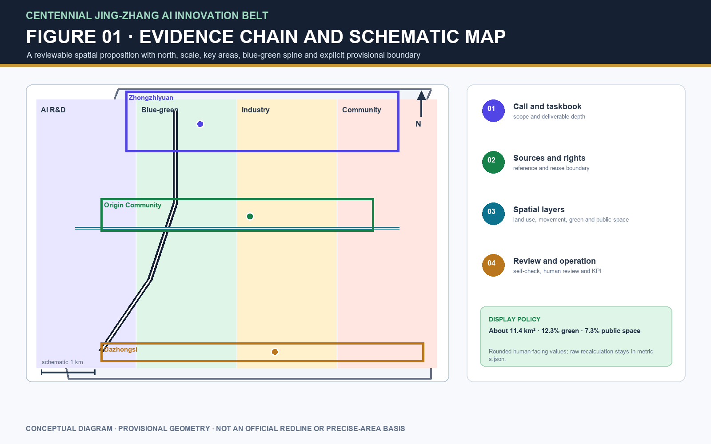
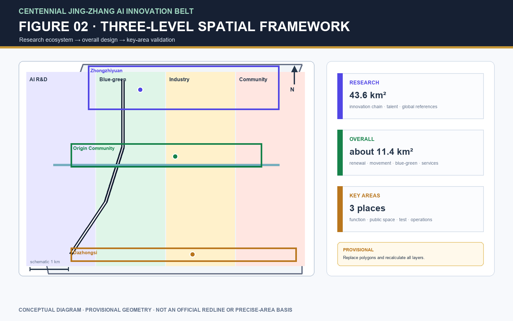
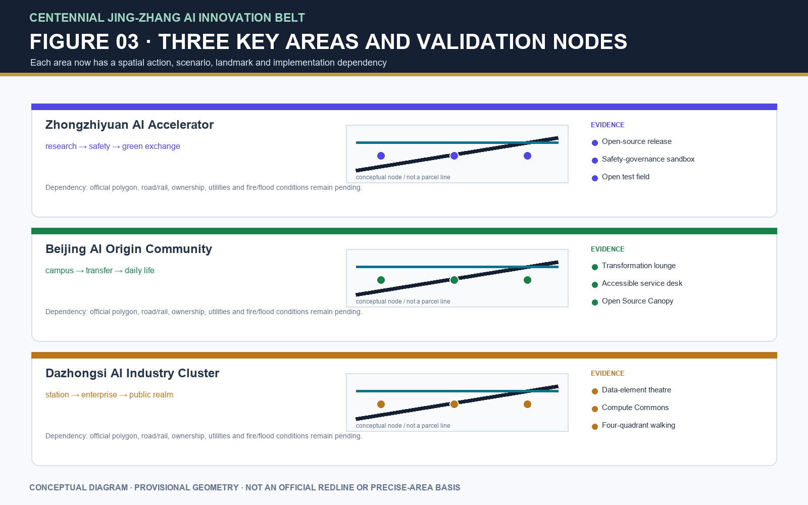
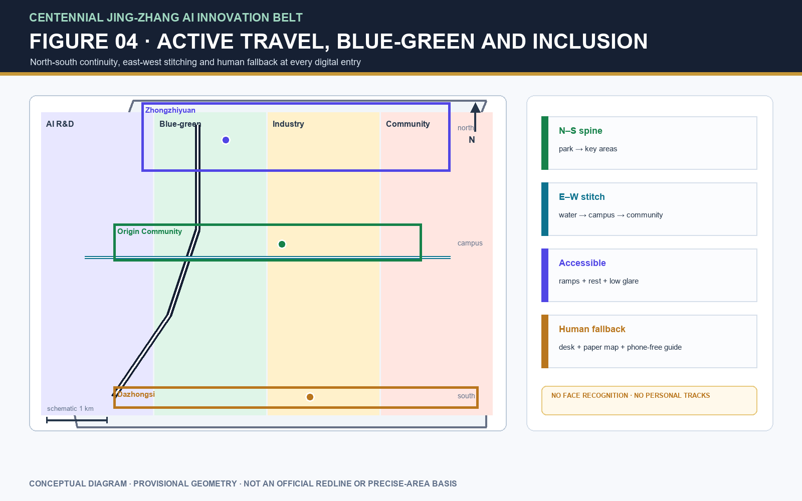
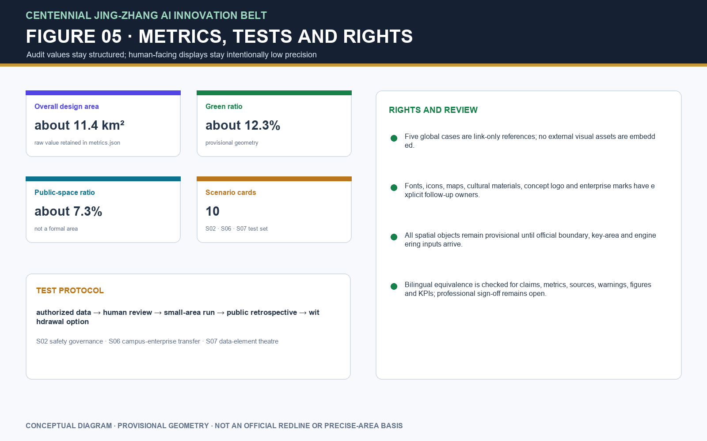

Information index
Brand, function and regional synergy
Two rails plus a forward pulse node; five functions close the loop from research to international communication.
| Position | Function | Spatial/service landing |
|---|---|---|
| Centennial cultural belt | Memory + communication | Timeline, wayfinding, contribution wall |
| Urban AI-life belt | Living + experience | Active loop, community services, staffed alternatives |
| AI-integrated innovation belt | Research + transformation | Release, test, compute, pitching |
Regional interfaces
Beiwei Community · Future Science City · Huairou Science City · Beijing E-Town · Beijing-Tianjin-Hebei
All named cooperation remains conceptual until written confirmation.
Reference cases: Singapore Punggol Digital District · Helsinki 3D · Seoul S-Map · Amsterdam Algorithm Register · Virtual Singapore
Revised visual evidence
The five figures were regenerated from the revised information architecture. They use a north arrow, schematic scale, legend, rounded metrics and adjacent provisional warnings.





Ten scenario cards and three industrial tests
Ten cards include data, privacy, human review, operator, maturity, exception handling and KPI. S02, S06 and S07 form the proposed industrial test set.
| Scenario | Location / users | Data, privacy, review | Operator / maturity / KPI |
|---|---|---|---|
| S01 Open-source hall | Origin / developers, universities, start-ups | Public agenda; voluntary submissions; no traces; human review | Community + university / pilot / 4 per quarter, ≥80% satisfaction |
| S02 Safety sandbox | Zhongzhiyuan / evaluators, public | Authorized sets; anonymized results; expert review | Safety group / pilot / 3 test packs per quarter |
| S03 Active-travel diagnosis | Park crossings / residents, accessibility users | Public network, anonymous counts, walking audit; no faces | Public-space operator / verifiable / ≥70% gap closure |
| S04 Talent-life service | Community / talent, caregivers, older people | Opt-in queries; staffed counter and paper guide | Community desk / concept validation / 100% alternative channel |
| S05 Safety-governance corridor | Zhongzhiyuan / firms, students, public | Authorized model cards and risk cases; human explanation | Standards group / concept / one briefing per month |
| S06 Campus-enterprise lounge | Origin / universities, firms, legal | Voluntary booking; submitting team confirms rights | Transformation operator / pilot / 6 matches per quarter |
| S07 Data-element theatre | Dazhongsi / firms, public, developers | De-identified, authorized, traceable examples; audit | Data group / concept validation / chain for every example |
| S08 Low-carbon compute | Blue-green node / residents, developers | Read-only energy data; no identity; staffed maintenance | Facility + energy / engineering pending / response ≤24h |
| S09 Memory route | Heritage Park to key areas / visitors | Rights-cleared text/audio; offline guide | Culture/public-space / pilot / ≥60% completion |
| S10 Global AI route | Public-space system / developers, visitors | Voluntary registration; safety and likeness checks | Event coordinator pending / concept / annual review |
Public space, landmarks and operations
One historic spine, two connecting directions and three concept landmarks. The six projects use concept RACI/KPI, not confirmed institutional responsibility.
| Landmark | Spatial move |
|---|---|
| Pulse Gate | Heritage entrance; timeline, staffed guide, accessible rest |
| Open Source Canopy | Origin Community; removable release and pitching surface |
| Compute Commons | Dazhongsi; energy/compute explanation and public seating |
Inclusion, rights and open conditions
The package embeds no remote scripts, remote fonts, map tiles, third-party images or enterprise marks. The ledger is provenance evidence, not legal clearance.
Open conditions
Official boundary/key-area polygons, roads, ownership, regulatory controls, utilities, accessibility surveys, partner authorization and professional translation sign-off remain open.
Manual equivalence
Title, claims, metrics, sources, boundary warnings, figure numbers/positions, scenario KPIs and copyright notes checked; human professional sign-off remains required.
See report/copyright_statement.md, sources.json, risk.json, spatial.json and compliance_matrix.json for the auditable package records.